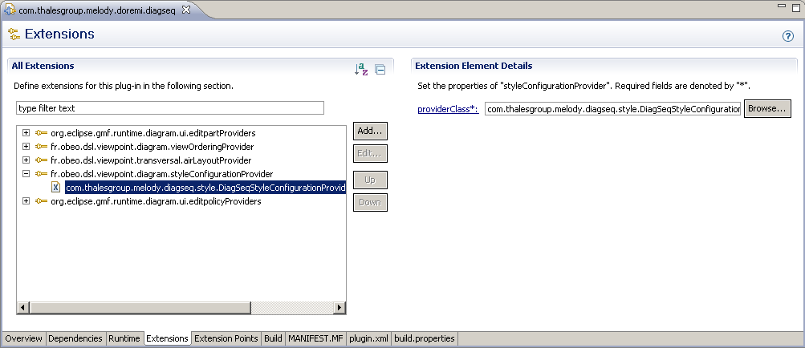
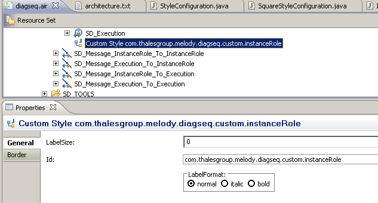
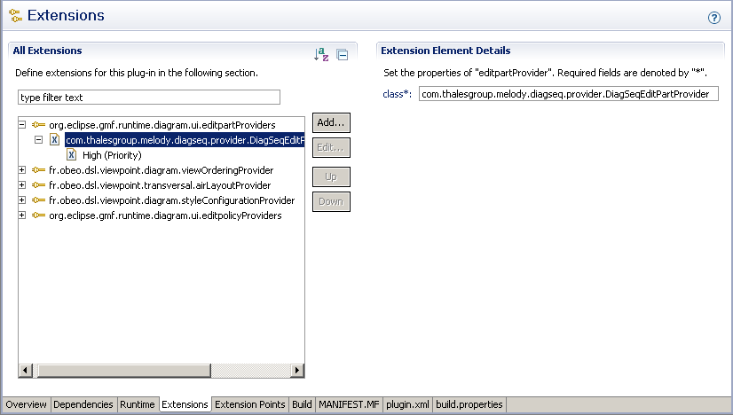
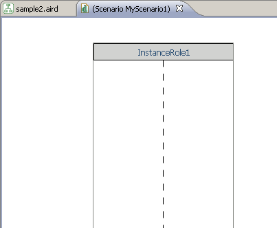
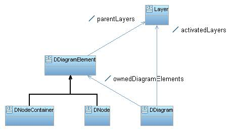
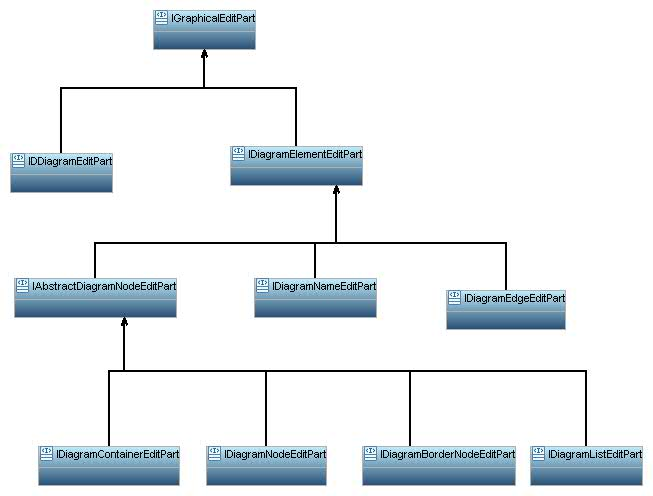

Sirius provides tools to design and display diagrams. These diagrams are essentially composed of figures of distinct styles
and shapes and, even though the tooling initially allows for the usage of a wide array of styles, many diagrams will still require
customized styles to conform to the company’s theme.
Sirius offers three distinct ways of customizing its graphical styles:
StyleConfiguration extension point.
CustomStyle in addition to the
EditPartProvider GMF extension point.
StyleConfiguration is a mechanism that enables the customization of a specific style. It aims at providing support for different
ways of displaying labels, anchors, ...
This interface defines a set of methods that need be implemented in order for the syle to be customizable:
void adaptNodeLabel(DNode node, WrapLabel nodeLabel)
BorderItemLocatorProvider getBorderItemLocatorProvider()
IBorderItemLocator getNameBorderItemLocator(DNode node, IFigure mainFigure)
int adaptViewNodeSizeWithLabel(DNode viewNode, WrapLabel nodeLabel, int nodeWidth)
AnchorProvider getAnchorProvider()
Image getLabelIcon(DDiagramElement element)
Dimension fitToText(DNode node, WrapLabel nodeLabel, DefaultSizeNodeFigure defaultSizeNodeFigure)
This method can be used to alter the size and location of a given label according to a given node.
viewNode: The node representation.
nodeLabel: Label of the node.
This method returns the instance currently providing border item locators for the node. A border item is a node located on the border of another node.
This method returns the item locator for the label of the node. This method is meaningless if the position of the label isn’t
BORDER.
node: The node representation.
mainFigure: The Draw2D figure representing the node.
This method returns the minimum width a node needs to be correctly displayed with its label.
viewNode: The node representation.
nodeLabel: Label of the node.
nodeWidth: Current width of the node.
This method returns the instance providing connections anchors.
This method returns the icon that will displayed for this element’s representations.
vpElement: The element for which we need an icon.
This method returns the optimal dimension of the node.
node: The node representation.
nodeLabel: Label of the node.
defaultSizeNodeFigure: The draw2d representation of the node.
The
StyleConfiguration mechanism is only available for
ViewNode at the moment. Default configurations are initially installed on nodes.
SimpleStyleConfiguration
This configuration is the simplest implementation.
SquareStyleConfiguration
This is the minimal configuration for nodes using the
BundledImage style with a square shape.
SimpleSquareStyleConfiguration
This is the minimal configuration for nodes with a
Square style.
Installing your own configurations can be done through the
org.eclipse.sirius.diagram.styleConfigurationProvider extension
point. This extension point requires only one attribute: the qualified name of the provider class.
<extension point="org.eclipse.sirius.diagram.styleConfigurationProvider">
<styleConfigurationProvider providerClass="com.example.diagseq.style.DiagSeqStyleConfigurationProvider" />
</extension>
Here is a sample of the extension tab of the PDE editor when filling in this extension point:

This example records the
DiagSeqStyleConfigurationProvider as a configuration provider. This class must implement the
IStyleConfigrationProvider interface.
The latter interface defines two methods:
boolean provides(DiagramElementMapping mapping, Style style)
This method returns true if the provider provides a configuration for the given mapping and style.
mapping: The mapping of the node.
style: Style of the node.
StyleConfiguration createStyleConfiguration(DiagramElementMapping mapping, Style style)
This method creates a StyleConfiguration for the specified mapping and style.
mapping: Mapping of the node.
style: Style of the node.
Here is an example of a provider:
public class DiagSeqStyleConfigurationProvider implements IStyleConfigurationProvider {
public StyleConfiguration createStyleConfiguration(DiagramElementMapping mapping, Style style) {
if (mapping instanceof NodeMapping) {
NodeMapping nodeMapping = (NodeMapping) mapping;
if (nodeMapping.getName() != null && nodeMapping.getName().equals(DiagSeqConstants.INSTANCE_ROLE_MAPPING_NAME)) {
return new InstanceRoleStyleConfiguration();
}
if (nodeMapping.getName() != null && nodeMapping.getName().equals(DiagSeqConstants.EXECUTION_MAPPING_NAME)) {
return new ExecutionSpecificationStyleConfiguration();
}
}
return null;
}
public boolean provides(DiagramElementMapping mapping, Style style) {
return mapping instanceof NodeMapping && ((NodeMapping) mapping).getName() != null
&& (((NodeMapping) mapping).getName().equals(DiagSeqConstants.INSTANCE_ROLE_MAPPING_NAME)
|| DiagSeqConstants.EXECUTION_MAPPING_NAME.equals(((NodeMapping) mapping).getName()));
}
}
public class SimpleStyleConfiguration implements StyleConfiguration {
public void adaptNodeLabel(DNode node, WrapLabel nodeLabel) {
if (nodeLabel.getParent() != null) {
Rectangle constraint = nodeLabel.getParent().getBounds().getCopy();
Insets borderDimension = this.getBorderDimension(node);
constraint.height -= (borderDimension.top + borderDimension.bottom);
constraint.width -= (borderDimension.left + borderDimension.right);
constraint.x += borderDimension.left;
constraint.y += borderDimension.top;
nodeLabel.setBounds(constraint);
nodeLabel.getParent().setConstraint(nodeLabel, constraint);
}
}
public int adaptViewNodeSizeWithLabel(DNode viewNode, WrapLabel nodeLabel, int nodeWidth) {
if (viewNode.getResizeKind() != ResizeKind.NONE_LITERAL) {
}
return nodeWidth;
}
public AnchorProvider getAnchorProvider() {
return null;
}
public BorderItemLocatorProvider getBorderItemLocatorProvider() {
return DefaultBorderItemLocatorProvider.getInstance();
}
public IBorderItemLocator getNameBorderItemLocator(DNode node, IFigure mainFigure) {
BorderItemLocator locator = new AirBorderItemLocator(mainFigure, PositionConstants.NSEW);
locator.setBorderItemOffset(new Dimension(1, 1));
return locator;
}
public Image getLabelIcon(DDiagramElement vpElement) {
EObject target = vpElement;
if (vpElement instanceof DSemanticDecorator) {
target = ((DSemanticDecorator) vpElement).getTarget();
}
if (isShowIcon(vpElement)) {
if (target != null) {
IItemLabelProvider labelProvider = (IItemLabelProvider) SiriusDiagramEditorPlugin.getInstance()
.getItemProvidersAdapterFactory().adapt(target, IItemLabelProvider.class);
if (labelProvider != null) {
ImageDescriptor descriptor = ExtendedImageRegistry.getInstance().getImageDescriptor(labelProvider.getImage(target));
if (descriptor == null) {
descriptor = ImageDescriptor.getMissingImageDescriptor();
}
return SiriusDiagramEditorPlugin.getInstance().getImage(descriptor);
}
}
}
return null;
}
protected boolean isShowIcon(DDiagramElement vpElement) {
if (vpElement instanceof MappingBased) {
DiagramElementMapping vpElementMapping = ((MappingBased) vpElement).getMapping();
if (vpElementMapping instanceof NodeMapping) {
return ((NodeMapping) vpElementMapping).isShowIcon();
}
if (vpElementMapping instanceof EdgeMapping) {
return ((EdgeMapping) vpElementMapping).isShowIcon();
}
if (vpElementMapping instanceof ContainerMapping) {
return true;
}
}
return false;
}
public Dimension fitToText(DNode node, WrapLabel nodeLabel, DefaultSizeNodeFigure defaultSizeNodeFigure) {
if (nodeLabel.getFont() != null) {
String text = node.getName();
int charHeight = FigureUtilities.getStringExtents("ABCDEF", nodeLabel.getFont()).height + 5;
int charWidth = FigureUtilities.getTextWidth("ABCDEFGHIJKLMNOPQRSTUVWXYZ", nodeLabel.getFont()) / 26;
double ratio = charHeight / charWidth;
int nbLines = (int) (Math.sqrt(text.length()) / ratio) + 1;
int nbCols = (int) (Math.sqrt(text.length()) * ratio) + 1;
int longestWord = this.getTheLongestWord(text.split("\\s"));
nbCols = Math.max(nbCols, longestWord);
int hHeight = nbLines * charHeight;
int hWidth = nbCols * charWidth;
Dimension size = nodeLabel.getPreferredSize(hWidth + nodeLabel.getIconBounds().width +
nodeLabel.getIconTextGap(), hHeight).getCopy();
size.width += 20;
size.height += 30;
Insets borderDimension = this.getBorderDimension(node);
size.width += (borderDimension.left + borderDimension.right);
size.height += (borderDimension.top + borderDimension.bottom);
//
// Square ?
if (node.getHeight().intValue() == node.getWidth().intValue()) {
// size.width = Math.max(size.height, size.width);
// size.height = Math.max(size.height, size.width);
}
return size;
}
return defaultSizeNodeFigure.getBounds().getSize().getCopy();
}
private int getTheLongestWord(String[] strings) {
int max = -1;
for (int i = 0; i < strings.length; i++) {
if (strings[i].length() > max) {
max = strings[i].length();
}
}
return max;
}
/**
* Return the dimension of the border.
*
* @param nodeth
* view node.
* @return the dimension of the border.
*/
public Insets getBorderDimension(DNode node) {
return new Insets(0, 0, 0, 0);
}
}
The easiest way to implement your own configuration is to make it a sub class of
SimpleStyleConfiguration.
CustomStyle is a style that can be applied to a node. Its only property is
id that is a string value. By default,
applying a CustomStyle will have a Green Square be displayed. A custom
EditPart describing the appearance of the node
must be implemented.
Here is how to apply a
CustomStyle:

Next step is to create and record an
EditPart to define the way this style will be managed.
An
EditPart is a GEF class. It references both a model element and the shape that represents it. GMF adds a layer to GEF
and exposes its own
EditPart API. The base type of this API is
IGraphicalEditPart (in package
org.eclipse.gmf.runtime.diagram.ui.editparts). Here are the main methods this interface defines:
EObject resolveSemanticElement(): This method returns the semantic element of the edit part. The type of this semantic element is a type contained by the Sirius package (see
SiriusPackage). For instance, if we were to write an
EditPart for our
CustomStyle, the semantic element would be the said
CustomStyle. It is possible to get the ViewNode with it and, then, the target element.
View getNotationView(): This method returns the GMF View of the edit part. This is the view that will be saved into the GMF Diagram.
All Custom Style Edit Part must implement the
IStyleEditPart interface. Semantically, a Style Edit Part should not be selectable: it is selected when the Shape or Connector that contains it is selected. Therefore,
all Custom Style Edit Part should override the
isSelectable() method and return false
. If you can, inherit from the abstract class
AbstractNotSelectableShapeNodeEditPart that already overrides correctly this method. You should also override the
createDefaultEditPolicies to do nothing if you want to let Sirius control your custom node as it is done in the provided Sirius style edit parts: the style part is responsible for the style/figure aspects while its parent part will mainly control the behavior by its policies. Otherwise you will need to properly add policies to override the default GMF policies, add your own specific policies or the Sirius ones.
Here is a sample of a Custom Style Edit Part:
public class InstanceRoleStyleEditPart extends AbstractNotSelectableShapeNodeEditPart implements IStyleEditPart {
/**
* the content pane.
*/
protected IFigure contentPane;
/**
* the primary shape.
*/
protected ImageFigure primaryShape;
/**
* Create a new {@link ChangingImageEditPart}.
*
* @param view
* the view.
*/
public InstanceRoleStyleEditPart(View view) {
super(view);
}
public DragTracker getDragTracker(Request request) {
return getParent().getDragTracker(request);
}
protected NodeFigure createNodeFigure() {
NodeFigure figure = createNodePlate();
figure.setLayoutManager(new XYLayout());
IFigure shape = createNodeShape();
figure.add(shape);
contentPane = setupContentPane(shape);
return figure;
}
private NodeFigure createNodePlate() {
DefaultSizeNodeFigure result = new AirStyleDefaultSizeNodeFigure(getMapMode().DPtoLP(40), getMapMode().DPtoLP(40));
return result;
}
/**
* Create the instance role figure.
*
* @return the created figure.
*/
protected ImageFigure createNodeShape() {
if (primaryShape == null) {
primaryShape = new ImageFigure();
}
return primaryShape;
}
/**
* Return the instance role figure.
*
* @return the instance role figure.
*/
public ImageFigure getPrimaryShape() {
return primaryShape;
}
/**
* Default implementation treats passed figure as content pane. Respects
* layout one may have set for generated figure.
*
* @param nodeShape
* instance of generated figure class
* @return the figure
*/
protected IFigure setupContentPane(IFigure nodeShape) {
return nodeShape; // use nodeShape itself as contentPane
}
public IFigure getContentPane() {
if (contentPane != null) {
return contentPane;
}
return super.getContentPane();
}
protected void refreshVisuals() {
CustomStyle customStyle = (CustomStyle) this.resolveSemanticElement();
if (customStyle.eContainer() instanceof DNode) {
this.getPrimaryShape().setImage(SiriusPlugin.getDefault().getBundledImage(((DNode) customStyle.eContainer()).getName()));
}
}
protected void createDefaultEditPolicies() {
// empty.
}
}
We now have to notify Sirius that we are providing a new
EditPart for nodes having a CustomStyle of that id.
The GMF extension mechanism can be used to achieve this.
plugin.xml:

<extension point="org.eclipse.gmf.runtime.diagram.ui.editpartProviders">
<editpartProvider class="com.example.diagseq.provider.DiagSeqEditPartProvider">
<Priority name="High"/>
</editpartProvider>
</extension>
The provider class (
com.example.diagseq.provider.DiagSeqEditPartProvider) extends the GMF class
org.eclipse.gmf.runtime.diagram.ui.services.editpart.AbstractEditPartProvider. Our custom Edit part will be
provided by overriding
getNodeEditPartClass. Here is how this class looks like:
public class DiagSeqEditPartProvider extends AbstractEditPartProvider {
@Override
protected Class getNodeEditPartClass(View view) {
if (view.getElement() instanceof CustomStyle) {
CustomStyle customStyle = (CustomStyle) view.getElement();
if (customStyle.getId().equals(DiagSeqConstants.INSTANCE_ROLE_STYLE_ID)) {
return InstanceRoleStyleEditPart.class;
}
}
return super.getNodeEditPartClass(view);
}
}
Where
DiagSeqConstants.INSTANCE_ROLE_STYLE_ID is the id of our custom style.
In the modeler, the result looks like this:

GMF exposes all of the necessary API to extend the default behavior of a modeler.
We saw earlier how to provide custom edit parts. Here is how the result looks like in Sirius.
Snapshot of the Sirius meta-model:

The types DNode, DNodeContainer, DNodeList, DNodeListElement, etc. have their own edit parts:

Edit Policies are objects responsible for the handling of user actions. There are Edit Policies for different behaviors:
As with edit parts, it is necessary to write an Edit Policy Provider as well as the Edit Policy that is to be provided. The
Edit Policy Provider must implement the
IEditPolicyProvider interface:
public void addProviderChangeListener(IProviderChangeListener listener): Registers a listener on the provider.
public boolean provides(IOperation operation): Returns true if this instance provides edit policies for the specified operation.
public void removeProviderChangeListener(IProviderChangeListener listener): Removes a listener from this provider.
public void createEditPolicies(EditPart editPart): Adds edit policies on the specified edit part.
Here is an example of an Edit Policy Provider
/**
* Provides Edit Policy for Note Attachment.
*/
public class AirNoteAttachmentEditPolicyProvider implements IEditPolicyProvider {
/** the property change support. */
private List listeners;
/**
* Create a new {@link AirNoteAttachmentEditPolicyProvider}.
*/
public AirNoteAttachmentEditPolicyProvider() {
this.listeners = new ArrayList(2);
}
public void createEditPolicies(EditPart editPart) {
if (editPart instanceof NoteAttachmentEditPart) {
editPart.installEditPolicy(EditPolicy.CONNECTION_ROLE, new AirNoteAttachmentEditPolicy());
}
}
public void addProviderChangeListener(IProviderChangeListener listener) {
this.listeners.add(listener);
}
public boolean provides(IOperation operation) {
if (operation instanceof CreateEditPoliciesOperation) {
CreateEditPoliciesOperation castedOperation = (CreateEditPoliciesOperation) operation;
EditPart editPart = castedOperation.getEditPart();
Object model = editPart.getModel();
if (model instanceof View) {
View view = (View) model;
if (view.getDiagram() != null && view.getDiagram().getElement() != null
&& view.getDiagram().getElement().eClass().getEPackage().getNsURI().equals(ViewpointPackage.eINSTANCE.getNsURI())) {
if ("NoteAttachment".equals(view.getType())) {
return true;
}
}
}
}
return false;
}
public void removeProviderChangeListener(IProviderChangeListener listener) {
this.listeners.remove(listener);
}
/**
* Fire a {@link ProviderChangeEvent}.
*/
protected void fireProviderChanged() {
ProviderChangeEvent event = new ProviderChangeEvent(this);
Iterator iterListener = this.listeners.iterator();
while (iterListener.hasNext()) {
IProviderChangeListener listener = (IProviderChangeListener) iterListener.next();
listener.providerChanged(event);
}
}
}
More flexibility can be achieved by writing an abstract provider:
public abstract class AbstractEditPolicyProvider implements IEditPolicyProvider {
/** All listeners. */
private List listeners = new ArrayList(1);
public void addProviderChangeListener(IProviderChangeListener listener) {
this.listeners.add(listener);
}
public void removeProviderChangeListener(IProviderChangeListener listener) {
this.listeners.remove(listener);
}
protected void fireProviderChanged() {
ProviderChangeEvent event = new ProviderChangeEvent(this);
Iterator iterListener = this.listeners.iterator();
while (iterListener.hasNext()) {
IProviderChangeListener listener = (IProviderChangeListener) iterListener.next();
listener.providerChanged(event);
}
}
}
There only remains to override the methods
provides() and
createEditPolicies() in this provider’s implementations.